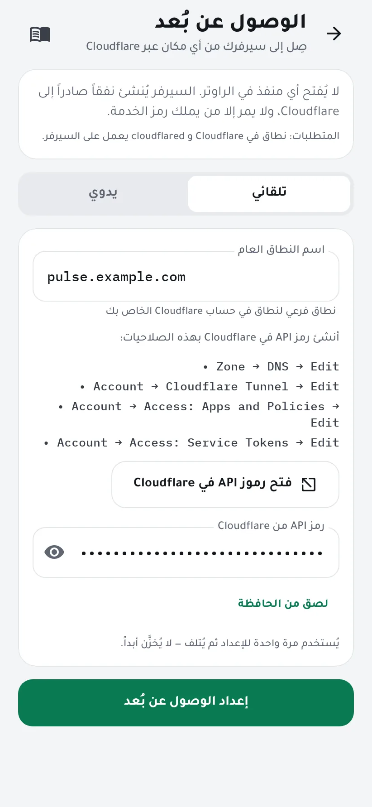
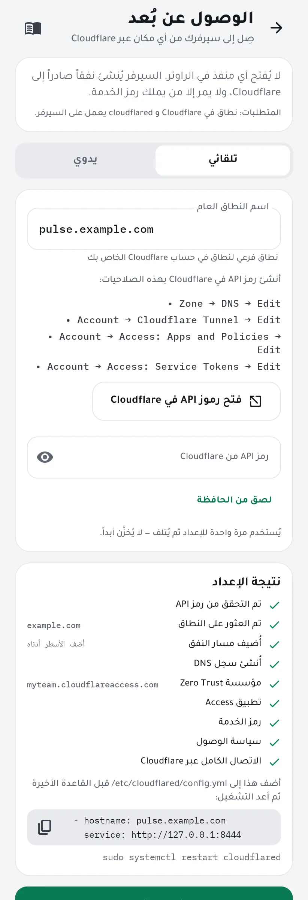
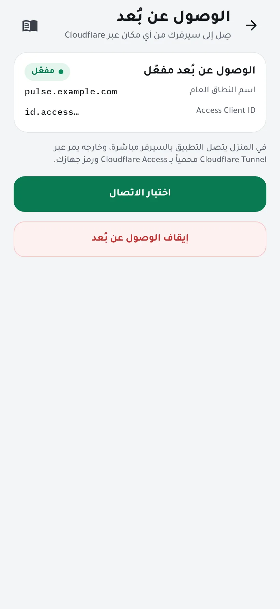
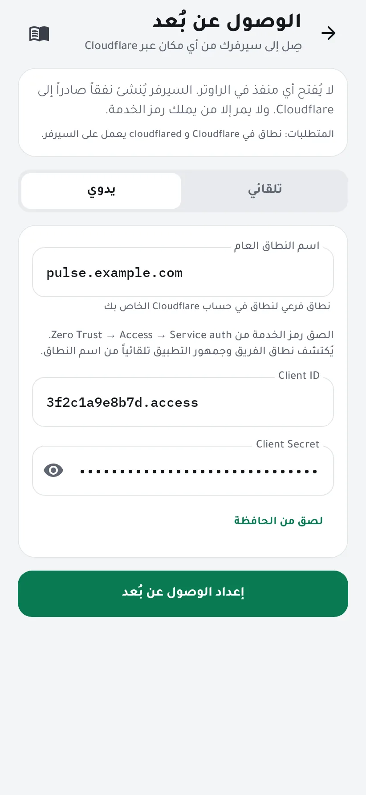

صِل إلى سيرفرك من أي مكان
في المنزل يتصل التطبيق بسيرفرك مباشرة، وخارجه يمر عبر Cloudflare Tunnel محمياً بـ Cloudflare Access: لا يُفتح أي منفذ في الراوتر، ولا يمر إلا الهاتف الذي يملك رمز الخدمة الخاص بك. يعدّ المعالج كل ذلك من رمز API واحد في Cloudflare.
تحتاج إلى
- نطاق (دومين) في حسابك على Cloudflare. تكفي الخطة المجانية.
- نفق يعمل على السيرفر عبر
cloudflared. تشرح Cloudflare ذلك في Get started with Cloudflare Tunnel. - هاتف بصلاحية مسؤول: الهاتف الذي ثبّت الوكيل، أو هاتف دُعي بصلاحية مسؤول.
-
اختر اسم نطاق عاماً
افتح الإعدادات ← الوصول عن بُعد وأبقِ تلقائي مختاراً. اكتب نطاقاً فرعياً من نطاقك في Cloudflare، مثل
pulse.example.com. لا يلزم أن يكون موجوداً مسبقاً.
-
أنشئ رمز API في Cloudflare
اضغط فتح رموز API في Cloudflare، ثم Create Token → Create Custom Token، وامنحه هذه الصلاحيات الأربع:
- Zone → DNS → Edit
- Account → Cloudflare Tunnel → Edit
- Account → Access: Apps and Policies → Edit
- Account → Access: Service Tokens → Edit
واختر نطاقك تحت Zone Resources. أنشئ الرمز وانسخه والصقه في المعالج.
يُستخدم الرمز مرة واحدة لإعداد كل شيء ثم يُتلف، ولا يُخزَّن أبداً. يمكنك حذفه من Cloudflare بعد ذلك.
-
ابدأ الإعداد
اضغط إعداد الوصول عن بُعد. يتحقق الوكيل على سيرفرك من الرمز، ويجد نطاقك ونفقك، ويضيف المسار وسجل DNS، وينشئ تطبيق Access ورمز خدمة وسياسة وصول، ثم يختبر الاتصال كاملاً عبر Cloudflare. تظهر نتيجة كل خطوة أمامك.

-
إن كان نفقك يُدار بملف إعداد، فأضف المسار
الأنفاق المُدارة من لوحة Cloudflare يُضاف إليها المسار تلقائياً. أما إن كان نفقك مُعدّاً في
/etc/cloudflared/config.ymlفسيعرض المعالج سطرين تضيفهما قبل القاعدة الأخيرة، ثم تعيد تشغيل cloudflared.ingress: - hostname: pulse.example.com service: http://127.0.0.1:8444 # … your other routes … - service: http_status:404sudo systemctl restart cloudflared
-
اختبر الاتصال
اضغط اختبار الاتصال: يفحص فاحص الاتصال كل مرحلة، ويخبرك بما يجب إصلاحه إن فشلت إحداها. من الآن يتنقّل التطبيق وحده بين الاتصال المباشر في المنزل وCloudflare خارجه.

لديك تطبيق Access مسبقاً؟
اختر يدوي، واكتب اسم النطاق، ثم الصق Client ID وClient Secret لرمز خدمة من Zero Trust → Access → Service auth. يُكتشف نطاق الفريق وجمهور التطبيق تلقائياً من اسم النطاق.

إن واجهتك مشكلة
- رسالة «لم يُعثر على نفق يعمل»
- ثبّت cloudflared وشغّل نفقاً على السيرفر أولاً، ثم أعد تشغيل المعالج.
- الرمز مرفوض
- تحقق من الصلاحيات الأربع أعلاه، ومن أن Zone Resources تشمل نطاقك.
- فشل الاختبار بعد الإعداد مباشرة
- قد يحتاج سجل DNS الجديد دقيقة ليعمل. وإن كان نفقك يستخدم config.yml فتأكد أنك أضفت الأسطر وأعدت تشغيل cloudflared.
- الإيقاف
- إيقاف الوصول عن بُعد يجعل الوكيل ينسى اسم النطاق ورمز الخدمة. يبقى تطبيق Access وسجل DNS في حسابك على Cloudflare حتى تحذفهما من هناك.